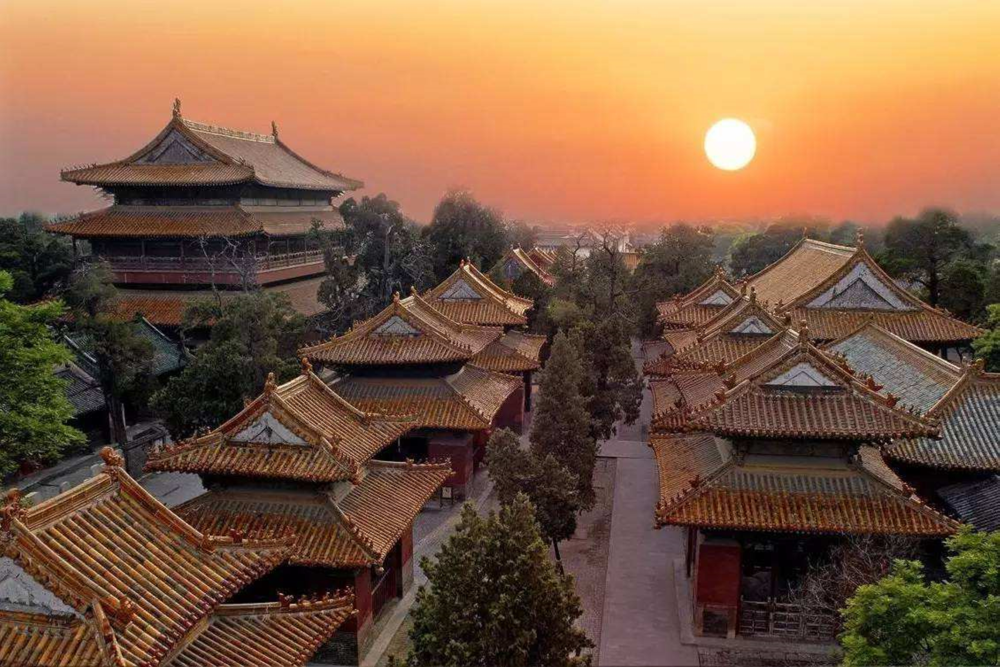

化州简介

化州市，广东省茂名市代管的县级市，古称石龙，因盛产化橘红而被命名为“中国化橘红之乡”，素有橘乡、橘城、橘州之美誉。其地形狭长，状若坐狮。 位于广东省西南部，鉴江中游，北与广西北流市交界，南与广东省吴川市接壤，东与高州市和茂名市茂南区相连，西与广西陆川县及广东省廉江市毗邻。全市总面积2354.2平方公里 ，下辖6街道17镇 ，2019年地区生产总值551.76亿元
化州北有浮梁山。东北有龙王山，又叫来安山。北界茂名水于东北，即窦江。另一支东北陵水，源出广西北流，入境后，屈西南到合江墟，罗水亦自陆水入，合称罗江，或者陵罗水。屈东南，过州治北合鉴江，又东南流，入吴川至南海。
化州是中国著名的南菜北运基地之一，有“中国化橘红之乡”的美誉。